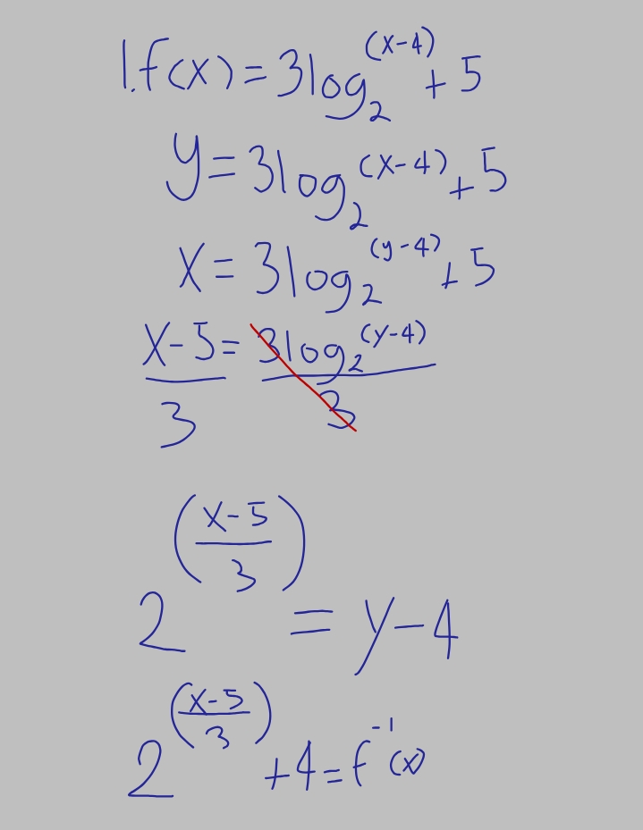
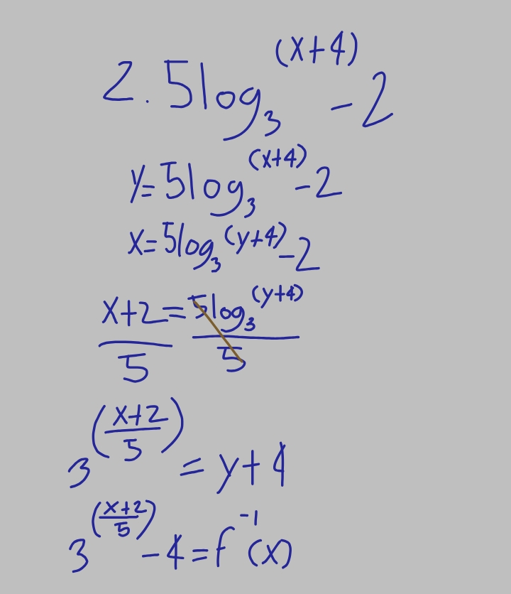
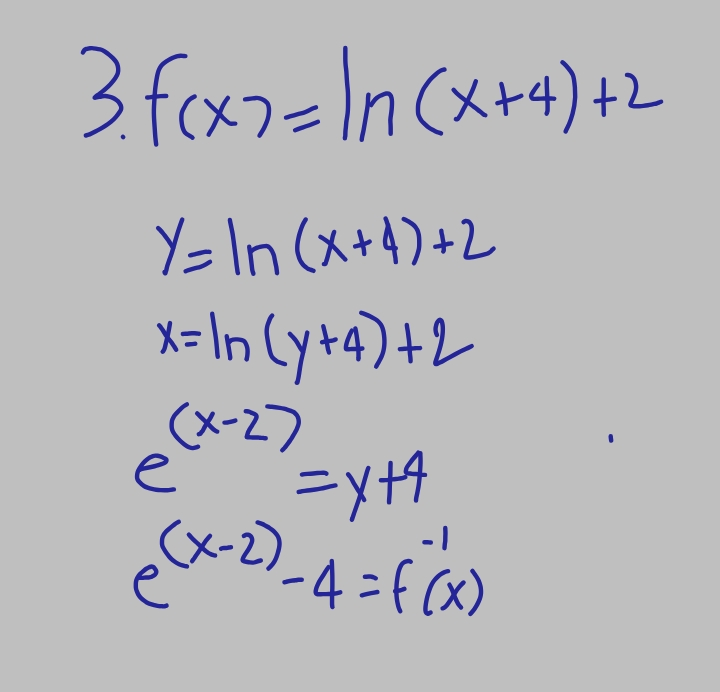
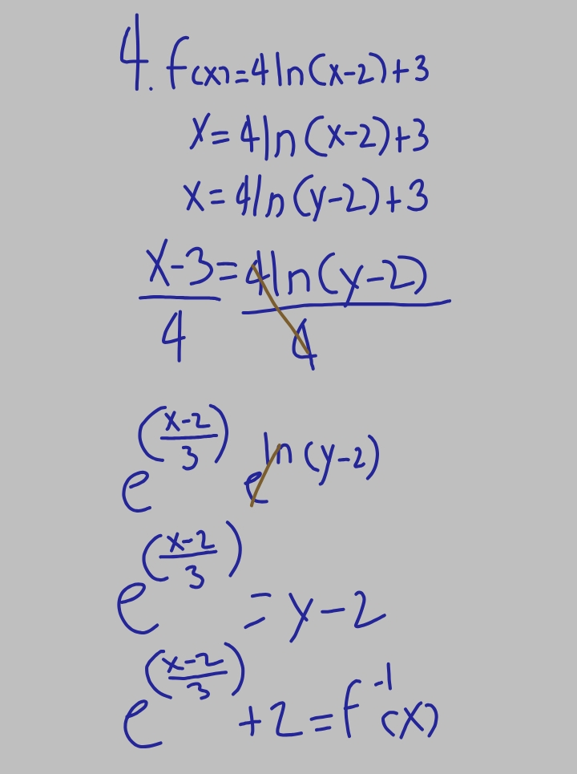
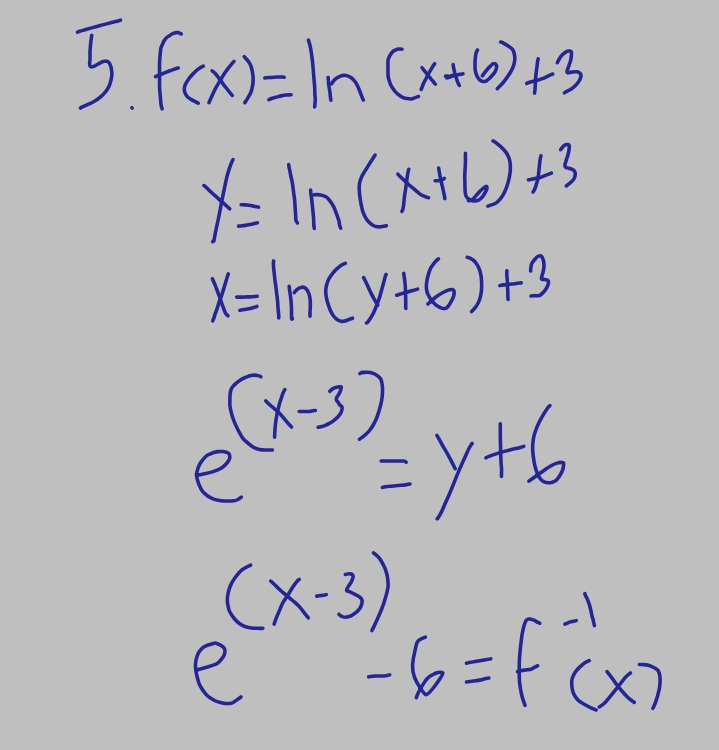

Inverse of Logarithmic Function
Finding the inverse of a log function is as easy as following the suggested steps below. You will realize later after seeing some examples that most of the work boils down to solving an equation. The key steps involved include isolating the log expression and then rewriting the log equation into an exponential equation. You will see what I mean when you go over the worked examples below.
Example




